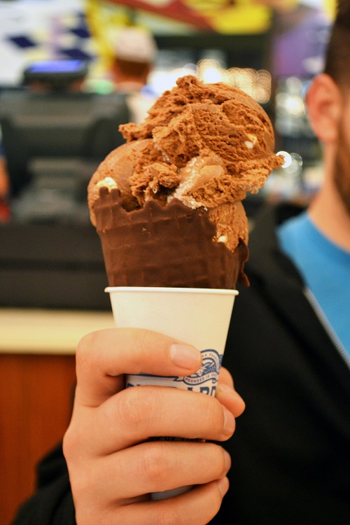

Sobre nosotros
"En Heladería Tatan, creamos los helados más exquisitos utilizando solo ingredientes naturales y frescos. Nuestra pasión por la artesanía se refleja en cada delicioso bocado, ya sea que estés disfrutando de nuestros cremosos helados, tradicionales helados de paila o refrescantes opciones de frutas. Estamos comprometidos a ofrecer a nuestros clientes un placer saludable y genuino en cada sorbo. Ven y descubre la diferencia en Heladería Tatan, donde la calidad y el sabor se fusionan en una experiencia incomparable." |
3 Años de experiencia |
1 Local |
20 Sabores de helado |
400 Helados vendidos al dia |
|  | Nuestras metas para el publico Bienvenido a Heladería Tatan, el destino perfecto para los amantes del helado en busca de sabores irresistibles y experiencias deliciosas. Desde su apertura, Heladería Tatan se ha convertido en el lugar de referencia en la ciudad para disfrutar de helados artesanales de alta calidad. En Heladería Tatan, nos enorgullecemos de ofrecer una amplia variedad de sabores únicos y tentadores, elaborados con ingredientes frescos y naturales. Desde los clásicos favoritos como vainilla y chocolate, hasta creaciones innovadoras como mango con chile o té verde con jengibre, siempre encontrarás algo nuevo por descubrir en nuestro menú. Nuestra heladería no solo se destaca por la calidad de sus helados, sino también por su ambiente acogedor y familiar. Con un diseño vibrante y moderno, Heladería Tatan es el lugar perfecto para disfrutar de un momento dulce con amigos y familiares, ya sea en nuestro cómodo salón o en nuestra encantadora área al aire libre. Ya sea que estés buscando refrescarte en un caluroso día de verano o simplemente desees darte un capricho dulce, ven y descubre la magia de Heladería Tatan. ¡Te esperamos con los brazos abiertos para ofrecerte una experiencia de helado inolvidable! |
Visión "En Heladería Tatan aspiramos a ser reconocidos como el destino preferido para los amantes del helado, no solo por la calidad excepcional de nuestros productos, sino también por la experiencia única que ofrecemos a nuestros clientes. Nos esforzamos por ser líderes en innovación, creando sabores únicos y emocionantes, mientras mantenemos nuestro compromiso con la calidad, la frescura y la autenticidad en cada helado que servimos. Buscamos expandirnos y llegar a nuevas comunidades, compartiendo nuestra pasión por el helado artesanal y saludable en todo el país." Misión "En Heladería Tatan, nuestra misión es deleitar a nuestros clientes con los helados más deliciosos, saludables y artesanales. Nos comprometemos a utilizar solo ingredientes naturales y frescos en la elaboración de nuestros productos, cuidando cada detalle para garantizar una experiencia excepcional en cada visita. Buscamos crear un ambiente acogedor y familiar donde nuestros clientes puedan disfrutar de momentos especiales mientras se deleitan con nuestros helados. Además, nos esforzamos por contribuir positivamente a nuestras comunidades, promoviendo un estilo de vida saludable y sostenible a través de nuestras prácticas comerciales y sociales." |